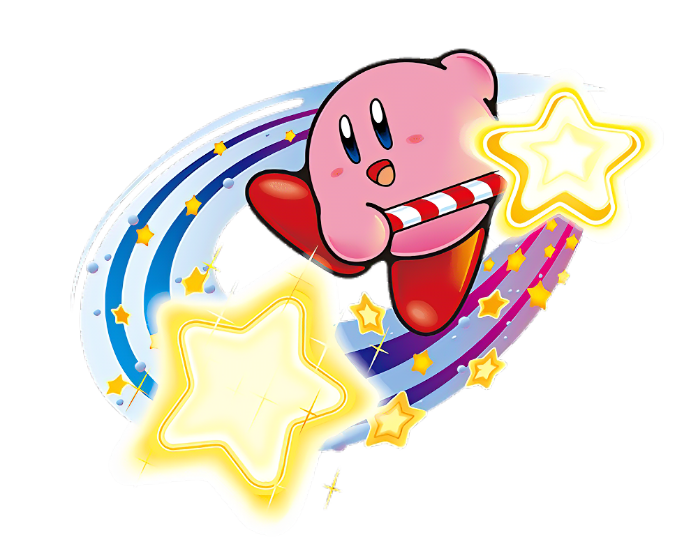

Relationships
Kirby has many friendships, but the closest thing he's ever had to a true relationship was with Ribbon in Kirby 64, although it was a one time thing. The main thing Kirby has is multiple friendships with his friends such as Rick, Kine, Coo, Gooey, and Elfilin.
Values
Like I said before, Kirby is the embodiment of good, and has been known to do only good things, although in certain cases he can be portrayed as bit of an idiot. He has done a few questionable things that do make people wonder if he is truly as good as he stated to be, but he often redeems himself later in the game and is still regarded as purely good.
Notable Events
The main notable events for Kirby are him killing gods, but there are a few other ones such as him being pulled into other dimensions and saving them. He has also converted a few of his current friends into good people, and has taken out Void, possibly creating a good creature as powerful as him. In simple terms, Kirby's notable events almost always involve him saving the world.